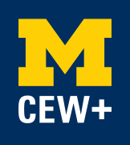

About the CEW+
At CEW+, we navigate circumstantial barriers by providing academic, financial, and professional support to help you reach your personal potential. Established to support women through higher education, we lift up women and all underserved communities at U-M and beyond. Through career and education counseling, funding, workshops, events, and a diverse, welcoming community, we exist to empower. We are CEW+, and we’re here to help you reach your potential.
Our Services
At CEW+, we offer a myriad of services for students, staff, faculty, and the community alike. Our services include:
- Events & Workshops
We offer Events & Workshops across various topics and audiences - Funding
Opportunities for scholarships, emergency grants, sponsorships, fellowships, and more for a range of situations and life circumstance - Counseling
We offer career, education, and emergency funding counseling appointments in person, over the phone, or via Zoom. - Advocacy
Initiatives
Through a variety of initiatives, groups, and lecture series, we lift up and make space for diverse voices.
Get In Touch
The Center for the Education of Women+ is located at 330 E. Liberty Street, Ann Arbor, MI 48104.
You can also reach us at (734) 764-6360.